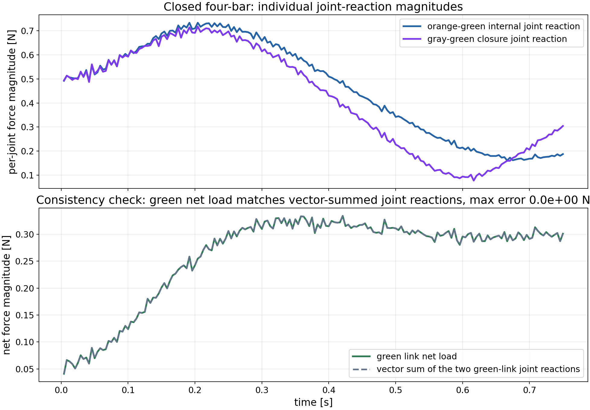
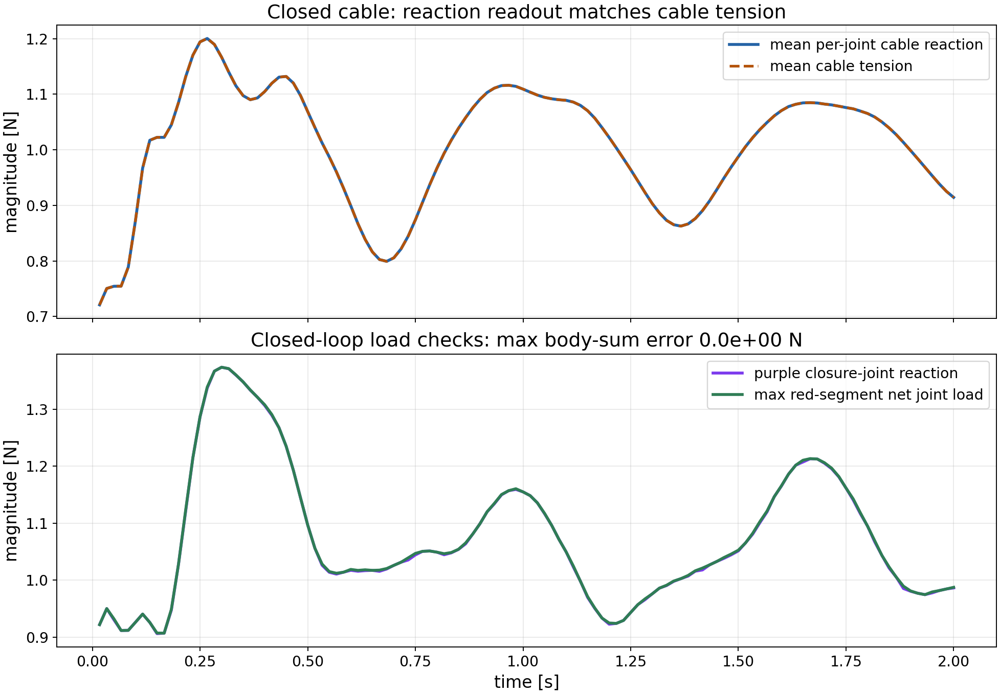

Closed four-bar
Blue, orange, and green links form a closed linkage. The clean plots below show the two separate joint-reaction magnitudes and the green-link vector-sum check.
Newton VBD validation
A closed four-bar linkage where two joints act on the green right link. The report checks that
state.vbd.joint_reaction_f keeps those joint loads separated while their sum matches
state.body_parent_f. A second scene applies equal and opposite pulls to two highlighted segments of a
standalone closed cable loop. The purple marker is the loop-closing joint; the plot compares
per-joint reactions against the cable-specific
state.vbd.cable_tension readout.
One reaction wrench per joint, including loop-closing joints that cannot be represented by a tree-only parent chain.
A body-indexed readout stored in state.body_parent_f. In closed loops it is the merged load on the body, not a substitute for per-joint reporting.
A scalar cable-specific tension readout used here as an independent check against the axial part of the per-joint reaction.
The plots show force magnitudes from the linear component of the reported world-frame reaction wrenches.
Blue, orange, and green links form a closed linkage. The clean plots below show the two separate joint-reaction magnitudes and the green-link vector-sum check.
Two red cable segments are pulled in opposite directions. The purple marker identifies the loop-closing cable joint used by the closure-joint reaction plot.
The upper plot is a separation view: two different joints act on the green link, and the plotted values are individual force magnitudes. They are not meant to add as scalars. The lower plot is the consistency check: the green link net load, read from state.body_parent_f, lands on top of the vector sum of the two green-link per-joint reactions.

The cable loop is pulled outward at the two red segments with equal and opposite forces, so the net external force on the whole loop is zero. The purple marker identifies the loop-closing joint. The mean per-joint reaction and mean cable tension agree to 1.49e-08 N; the max red-body load is the larger net joint-load magnitude over the two loaded red segments, read from state.body_parent_f.

| Scene | Command | What to inspect |
|---|---|---|
| Closed four-bar | uv run -m newton.examples vbd_joint_reaction_four_bar |
Orange-green and gray-green reactions stay separated; the green link net load is their body-level sum. |
| Closed cable loop | uv run -m newton.examples vbd_joint_reaction_closed_cable |
Red loaded segments, purple closure joint, reaction-tension agreement, and max red-segment net joint load. |